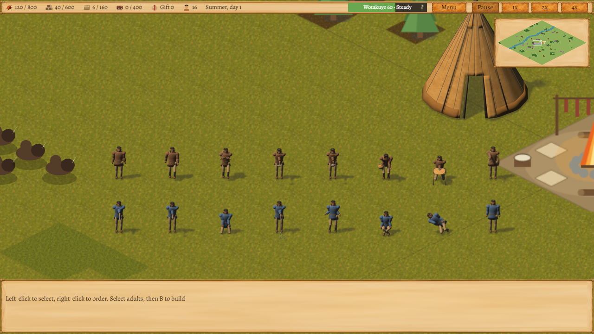

AB13 · Man action library
Approval authority: Claude. Candidate only. Uses the AB12 figure approved by the user on 22 November 2026. Both family colours, eight directions, all fifteen animations. Walk is unchanged. Death repeats here after a held final pose for review; the game plays it once.
Action overview · All 1,408 frames · Provenance · Game checks
Game previews

Each action is also captured separately at zoom 0.5, 1 and 2 on both screen sizes. Fish and dance are previewed directly through the renderer; gameplay for those activities comes later.